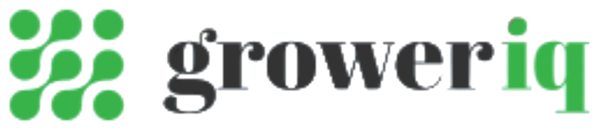

Quality at
every stage.
At Aho, quality is not a final inspection.
It begins with the plant, the people growing it, and the decisions made throughout every stage of cultivation.
From clone through to harvest, curing, trimming and sale, our approach combines experienced people, hands-on quality control and full product traceability.
Quality should be built in, not inspected in.
ScrollQuality begins
with the grower.
The first point of quality control is not a laboratory or a processing room. It is the grower.
Our cultivation team monitors plants throughout their lifecycle, identifying issues early and responding when required. That experience allows our team to recognise subtle changes in plant health, environmental response and development that may otherwise be missed.
Every observation creates an opportunity to act.
Every intervention protects what comes next.

Harvest isn’t where quality ends.
Slower. More deliberate. Intentional.
Our flower is carefully harvested, cured and hand trimmed, allowing each plant to be assessed again before it reaches its final form. During trimming, unwanted material and visible defects can be identified and removed by hand.
- Harvest
- Cure
- Hand trim
- Process
Another set of experienced eyes.
Aho has supported experienced cannabis trimmers from the United States to relocate to New Zealand, bringing with them more than a decade of direct industry experience. Experienced trimmers understand that trimming is not simply about appearance.
It is another quality-control stage.
- Grower
- Harvester
- Trimmer
- Processor
Quality is reinforced at multiple stages rather than relying on a single inspection at the end.
One plant. One connected history.

Human experience is supported by digital traceability.
- Clone
- Cultivation
- Harvest
- Curing
- Trimming
- Processing
- Sale

Aho has implemented GrowerIQ, an integrated track-and-trace system that follows our product through the cultivation and production process. From propagation and cultivation through harvest, processing and eventual sale, the system gives us visibility over the history of each crop.
Each stage creates a record.
The finished flower is only part of the story.
- Where was it grown?
- What inputs were used?
- How was it handled?
- What happened between clone and finished product?
Traceability allows cultivation information to remain connected to the plant throughout its lifecycle. For us, transparency means being able to demonstrate the journey rather than simply describing the final product.
Know where it came from.
Know what went into producing it.
Transparency you can explore.
Through our digital systems, there is an opportunity for customers and partners to gain greater visibility into how Aho cannabis is cultivated, including access to a virtual view of the farm and cultivation environment.
Because transparency is not simply about having information available internally.
It is about creating confidence in where a product came from and how it was produced.
From clone to sale, the story remains connected.
- CultivationPlant health monitored.
- HarvestFlower assessed.
- CuringDevelopment carefully managed.
- Hand trimmingFlower individually inspected.
- ProcessingControlled handling and preparation.
- TraceabilityCultivation history remains connected.
People.
Process.
Proof.
- Technology gives us traceability.
- Process gives us consistency.
- But experienced people remain at the centre of quality.
- A grower noticing a change in a plant.
- A trimmer identifying something that does not belong.
- A cultivation record showing exactly what occurred.
Each is a different form of quality control. Together, they protect the integrity of the product from its earliest stage through to sale.
Quality grown in.
Quality checked by hand.
Quality traced from clone to sale.